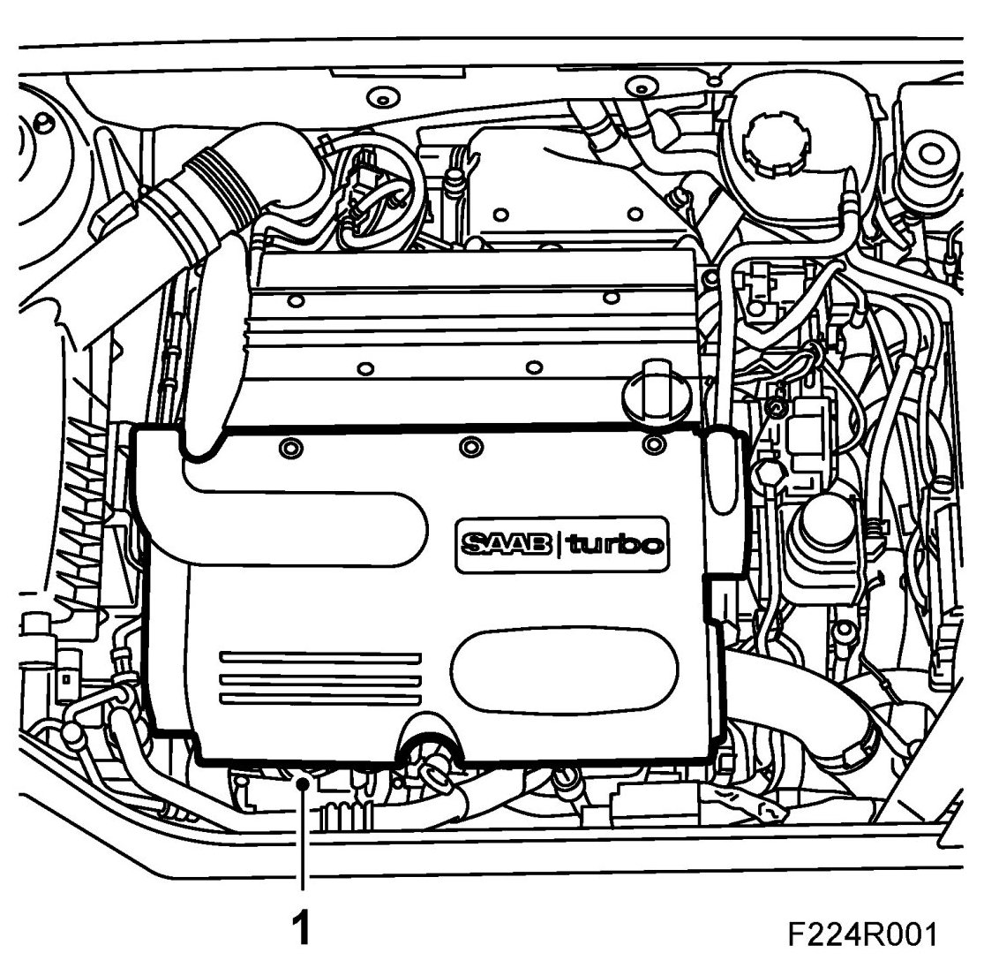
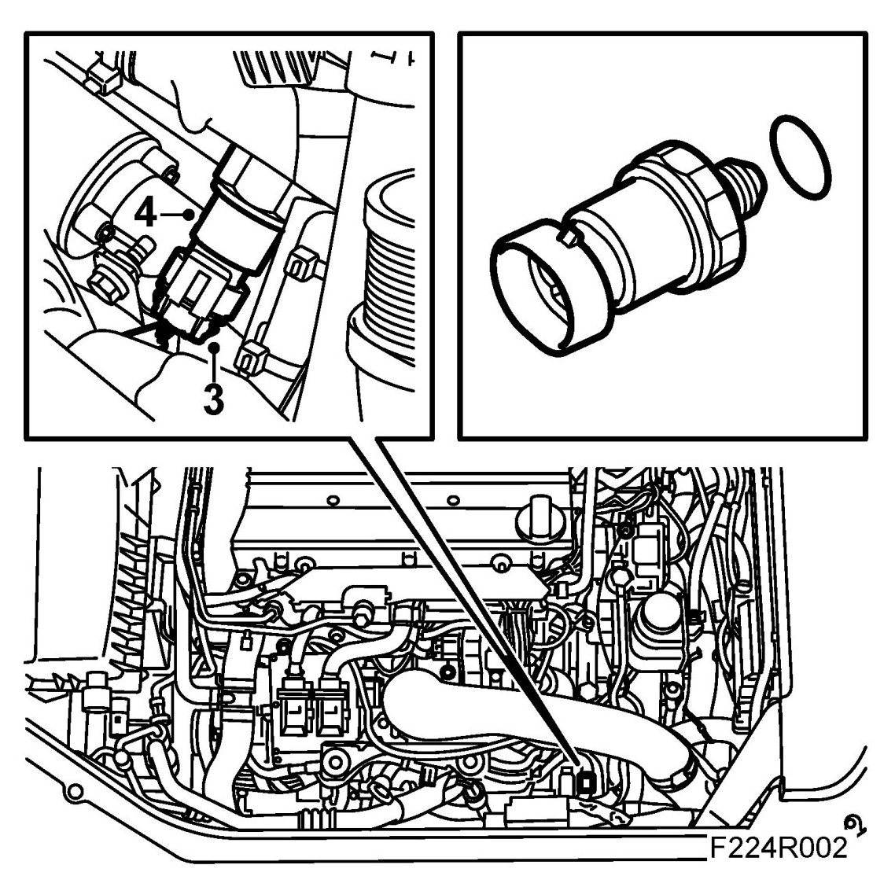
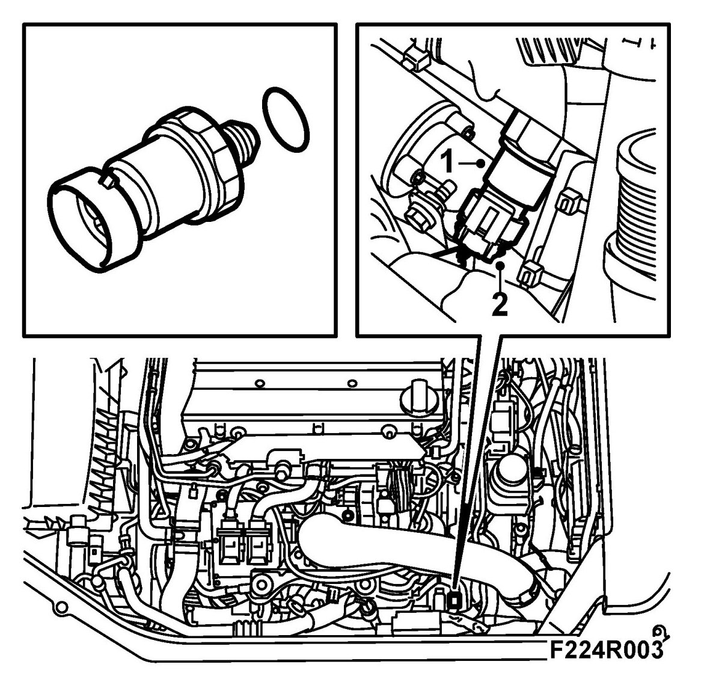
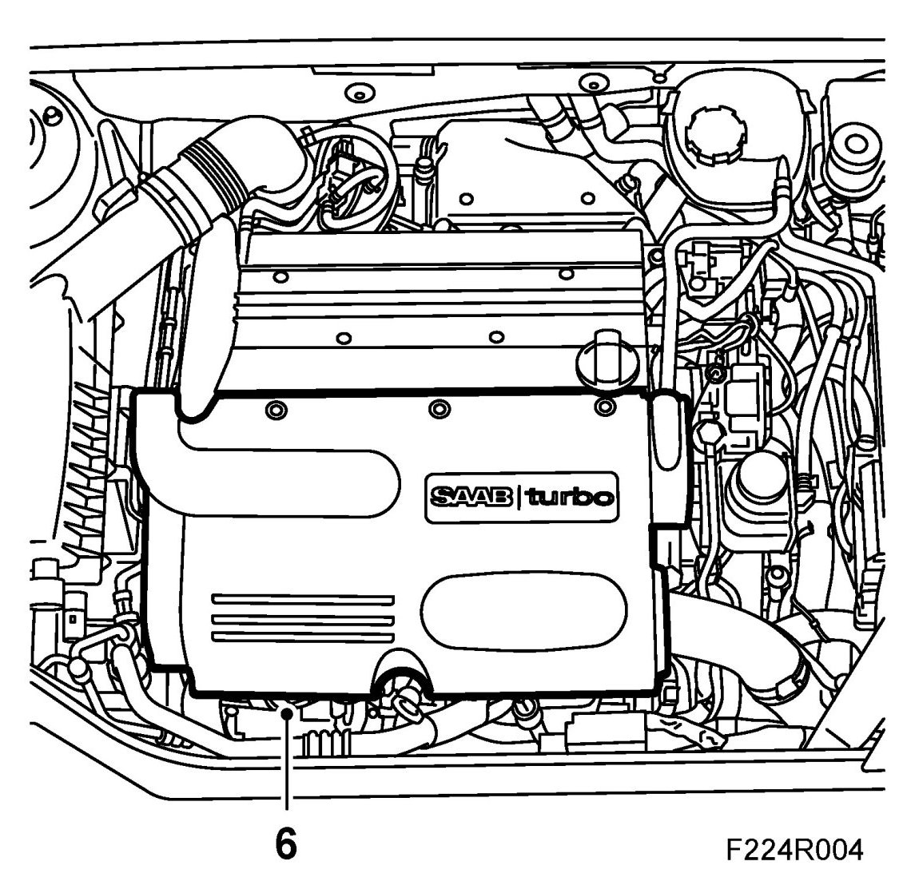

Oil Pressure Sensor: Service and Repair
Pressure Monitor, Engine Oil (44)
To remove
1. Remove the upper engine cover.

2. Place a receptacle to collect spilled oil.
3. Unplug the connector.

4. Remove the oil pressure switch. Tool 83 95 187 (27 mm fitting).
To fit
1. Fit the oil pressure switch with new steel and wipe away any spilled oil.

Tightening torque 18 Nm (13 lbf ft).
2. Plug in the connector.
3. Remove the receptacle.
4. Connect an exhaust extractor and start the engine to check its function.
5. Switch off the engine.
6. Replace the upper engine cover.
